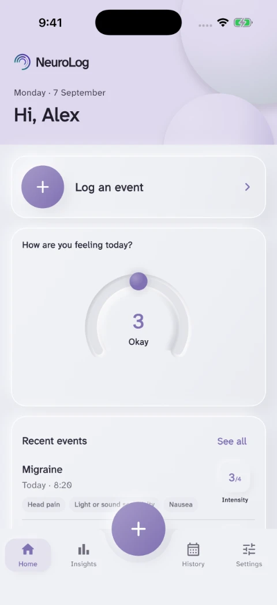
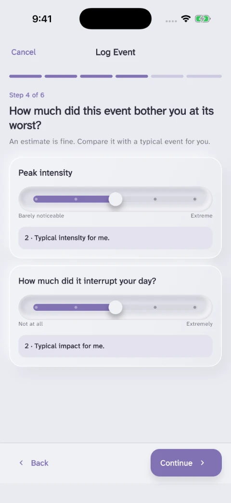
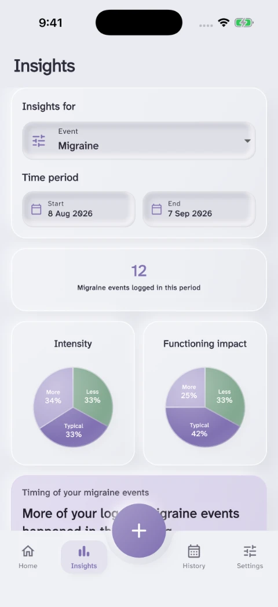

No two experiences are the same. Understand your unique patterns.
Log neurological events and symptoms, sync your wearable data and see your patterns over time. For iOS and Android.
Event and symptom tracking.
Record the timing, symptoms and impact of an event, with optional notes. Browse your history and use Insights to review event frequency, timing and intensity over a date range you choose.



Sync your wearable data.
Connect through Apple Health on iPhone or Health Connect on Android. Sleep, heart rate and activity add context to the events you log. You can also use NeuroLog without a wearable.
Available measurements depend on your device, its companion app and the permissions you allow. Help with health connections.
Ready for the next appointment.
NeuroLog’s sharing tools are designed to give you a choice: review a concise summary with your clinician in the dashboard, or send an email export.
Choose which categories to share, such as events and wearable measurements, while keeping personal notes private. Clinical summaries and sharing.
Privacy and security.
We will never sell your data. Data is encrypted in transit and at rest. Connecting health data is optional, and research participation requires separate consent.